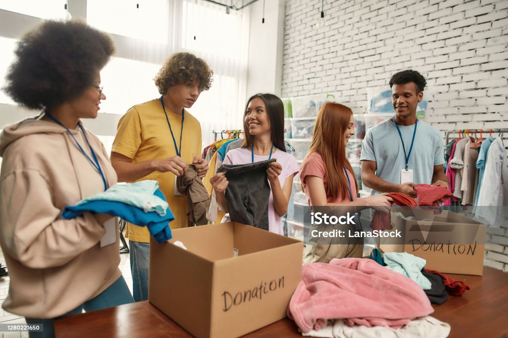

Conheça as ONGs Parceiras

ONG Esperança
Fornece cestas básicas e refeições quentes para famílias carentes.

ONG Abraço Solidário
Oferece roupas, apoio emocional e cursos de capacitação.
Projeto Comunidade Viva
Organiza mutirões para melhorar moradias e espaços comunitários.